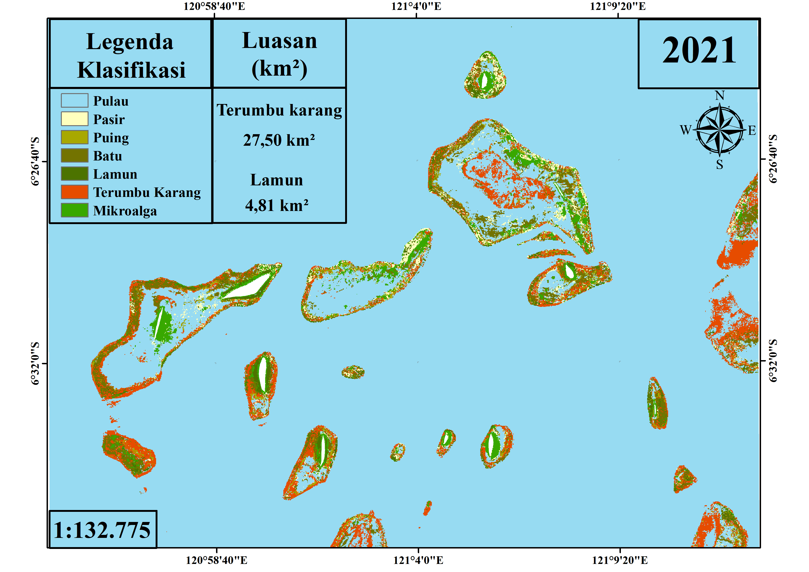
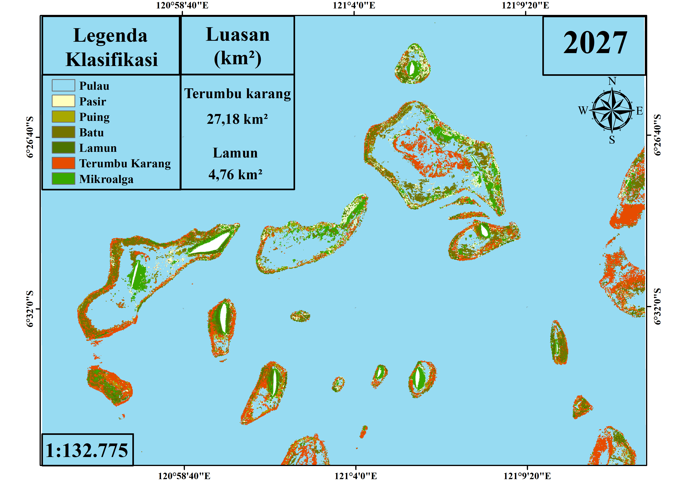
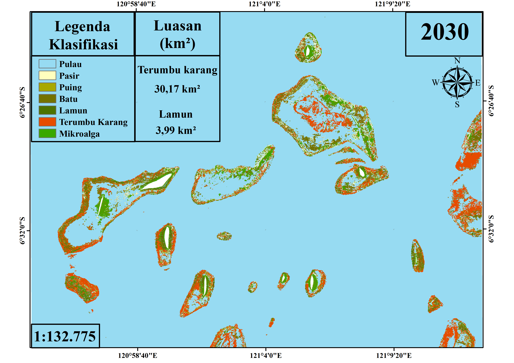

Spatial Distribution — 2021
Coral Reef and Seagrass Ecosystem



About This Project
This WebGIS presents the spatial and temporal distribution of coral reef and seagrass ecosystems. The platform is designed to support visualization and interpretation of marine ecosystem changes across different observation years.
The system combines spatial mapping, temporal visualization and marine environmental information within an interactive web-based interface.
Data & Methodology
Spatial Data: Coral reef and seagrass distribution maps.
Temporal Analysis: Comparison of ecosystem distribution across 2021, 2024, 2027 and 2030.
Visualization: Web-based spatial-temporal visualization using HTML, CSS and JavaScript.
Oceanographic Data: Ocean current integration is planned for future development using oceanographic data services.